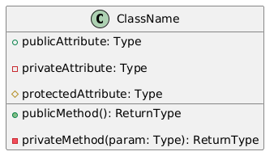
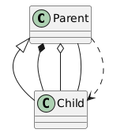
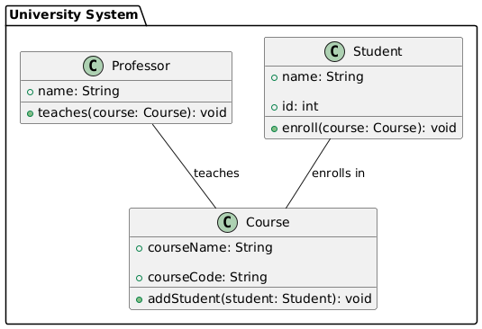

PlantUML is a simple yet powerful tool for creating class diagrams and other UML diagrams. It uses a plain-text language to define the diagram, making it accessible for developers familiar with text-based tools. This tutorial will walk you through the basics of creating class diagrams with PlantUML.
While you can install and use PlantUML locally, I suggest using an online IDE like PlantText (https://www.planttext.com).
Add the following to begin:
@startuml @enduml
All your diagram definitions go between @startuml and @enduml.
1. Creating a Class
Define a class with its attributes and methods:
@startuml
class ClassName {
+ publicAttribute: Type
- privateAttribute: Type
# protectedAttribute: Type
+ publicMethod(): ReturnType
- privateMethod(param: Type): ReturnType
}
@enduml
The result:
2. Relationships Between Classes
Define relationships such as inheritance, composition, etc.:
Example:
@startuml class Parent class Child Parent <|-- Child : Inheritance Parent *-- Child : Composition Parent o-- Child : Aggregation Parent -- Child : Association Parent ..> Child : Dependency @enduml
The result:
Example: Full Class Diagram
@startuml
package "University System" {
class Student {
+ name: String
+ id: int
+ enroll(course: Course): void
}
class Course {
+ courseName: String
+ courseCode: String
+ addStudent(student: Student): void
}
class Professor {
+ name: String
+ teaches(course: Course): void
}
Student -- Course : "enrolls in"
Professor -- Course : "teaches"
}
@enduml
The result:
